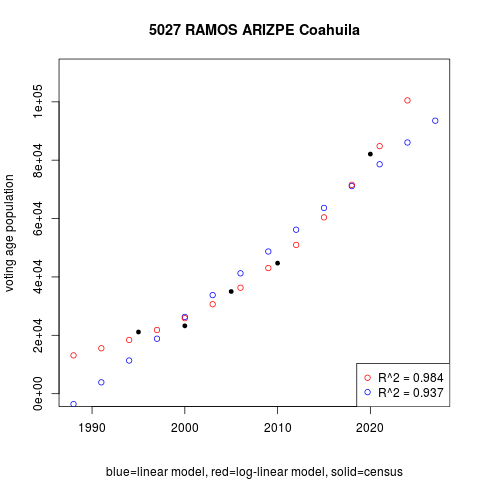
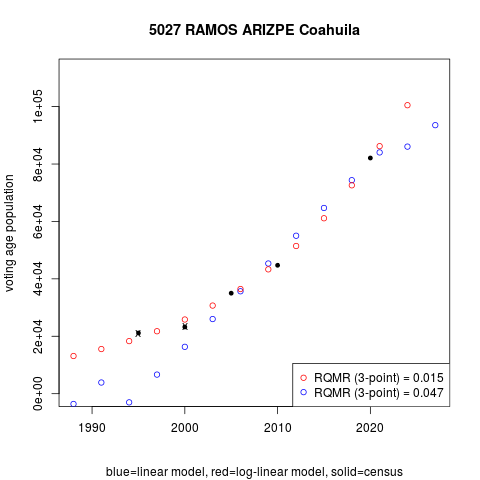
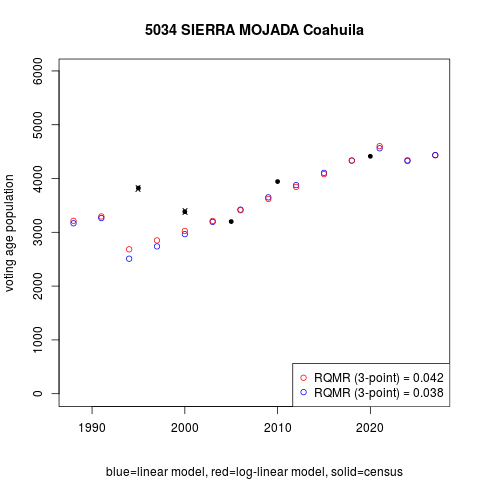

The longitudinal analysis of elections is richer when socio-demographic controls are included, such as voting age population or the share of indigenous language speakers in a unit. A key source of aggregate data is the census. Yet the mismatch between decennial censuses and the three-year election cycle is an obstacle. The census bureau fills the gap partially, distributing annual municipal projections of selected indicators only (excluding voting age population, see this for detail).
Systematic analysis of municipalities large and small (N ≈ 2500), of less common units such as federal or state electoral districts, or of much more disaggregated units like secciones electorales (N ≈ 67k) necessitates self-estimation of off-census socio-demographic indicators from official data. This note discusses one way to achieve this.
Voting age population in triennial federal elections from 1994 to 2021, one denominator to compute turnout rates, illustrates the problem, but the method extends to other socio-demographic aggregate quantities. In the period, the census bureau distributes population counts for 1990, 2000, 2010, and 2020—four "general censuses"—and mid-decade counts in 1995 and 2005—two "general counts".1 (From here on, `census' refers to counts and censuses indistinctly.)
Inter- and extra-polating the population 18 years or older
The population 18 years and older for non-census years can be projected, with inter- and extra-polation and with some assumptions, from the census figures available. Three approaches are inspected here:
I project the voting age population of municipalities secciones electorales. A further obstacle is that the census bureau began distribution of sección-level census aggregates only in 2005.2 So whereas five census points are available for municipal projections (1995 2000 2005 2010 2020), there are three only for secciones (2005 2010 2020).
Projection requires assumptions, among which are the following:
In this approach, a given unit's population in any year is the population recorded in the previous census plus the yearly inter-census population change times the years since that census. Formally, if \(t_1, t_2, \dots\) are contiguous census years, a given unit's population for year \(t\) is:
\[\text{pop}_t = \left\lbrace\begin{aligned} & \text{pop}_{t_1} + \frac{\text{pop}_{t_2} - \text{pop}_{t_1}}{t_2 - t_1} \times (t - t_1) \; \; \text{for} \; t \in [t_1,t_2] \\ & \text{pop}_{t_2} + \frac{\text{pop}_{t_3} - \text{pop}_{t_2}}{t_3 - t_2} \times (t - t_2) \; \; \text{for} \; t \in [t_2,t_3] \\ & \dots \end{aligned}\right.\]
The plots below illustrate segments projection in two municipalities in the northern state of Coahuila. Ocampo municipality lost voting age population steadily in the period. Pay attention to circles in the plot only, black are census values, white are segments projections. The drop decelerated after a partial recovery in 2005-2010. Fitting separate straight segments for each inter-census period accommodates changing trends of demographic change. Ramos Arizpe municipality is quite different, experiencing a sharp surge in voting age population in the same period. Segments with steeper slopes capture what appears to be accelerating voting age population growth in the period.
Unlike interpolation, extrapolating extends the first/last segments backwards/forward. Pulling the 1995-2000 segment to prior years in Ocampo projects steep continuous demographic decline. Whether or not 1995-2000 captures the actual longer-term demographic progress is uncertain.
The further temporally apart from a census point, the less reliable any longitudinal projection becomes. But both other approaches rely on the full census series, and not just the extreme segment, when attempting to extra-polate beyond a limiting census. The linear approach involves regressing a unit's census values on time, thus estimating the central trend of demographic change for the full period observed. This regression line is then used to make point predictions for all non-census years. The log-linear approach does the same, but tranforming the census data to allow increasing trends in time.
Figure 2 compares linear (in blue) and log-linear (in red) regression voting age population predictions against the censuses from which they derive (in solid black). Regression projections do not match census points as segments did but, in most cases, they summarize the central trend neatly. The log-tranformed approximates the Ramos Arizpe data more closely than the linear does, and this becomes clearer beyond the left and right census limits (1995 and 2020).
Goodness of fit
|  |
Pesquería municipality in Nuevo León state is a case of extremely poor regression fit. Reached in the second half of the 2010s by Monterrey's suburban area, census data are highly volatile. Such cases are present, but extremely rare. The table below reports regression models' quadratic mean of errors (residuals) in census years. Quantities are divided by the municipio's mean voting age population in the period, and this way performance statistics are expressed as shares: a Relative Quadratic Mean Residual RQMR = 0.351 in Pesquería means that predictions are 35 percent off the census observations on average. Pesquería stands at the 99.96th percentile, among the bottom four hundredths percent with poorest fit.
| Reverse percentile | 100% | 99% | 95% | 75% | 50% | 25% | 5% | 1% | 0% |
|---|---|---|---|---|---|---|---|---|---|
| worst | best | ||||||||
| Log linear projections | .355 | .153 | .082 | .042 | .027 | .018 | .010 | .006 | .002 |
| Linear projections | .605 | .178 | .086 | .042 | .028 | .019 | .010 | .006 | .003 |
The table reveals comparatively similar performances of the linear and log-linear projections up about the 95th percentile. The log-linear bottom 5% fared much better than the linear. This led me to choose the following combination for census data projection.
Elaborate that segments
Projecting
|  |  |
| 0% | 1% | 2.5% | 5% | 25% | 50% | 75% | 95% | 97.5% | 99% | 100% | |
|---|---|---|---|---|---|---|---|---|---|---|---|
| Log-linear 1995 | .000 | .002 | .004 | .006 | .035 | .074 | .137 | .290 | .410 | .549 | 1.881 |
| Log-linear 2000 | .000 | .001 | .002 | .005 | .026 | .056 | .101 | .234 | .322 | .511 | 1.228 |
| Linear 1995 | .000 | .002 | .004 | .010 | .043 | .092 | .167 | .404 | .608 | 1.318 | 10.604 |
| Linear 2000 | .000 | .001 | .003 | .005 | .025 | .052 | .101 | .250 | .388 | .661 | 5.185 |
INEGI replaced mid-decade `conteos' with a sample in 2015. Conteos Generales in 1995 and 2005 were a mini census, with a basic questionnaire excluding most items used in general censuses and with limited effort to re-interview non-responders. An opinion poll method was used instead in 2015, much cheaper yet hardly comparable. This note excludes the 1990 census because the voting age population, unavailable from the web page, requires a special request.
Roberto Ponce (CITE) attempted to reconstruct pre-2005 sección-level census data. The challenge is matching localidades (in rural Mexico) and manzanas (in urban Mexico), which INEGI has used as census tracts, to secciones electorales nationwide. Geo-referenced units open room to spot overlaps towards such match. It is worth revising this, he may have data.